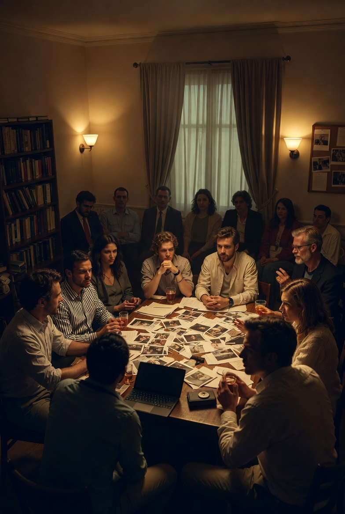

The Evidence Locker
A visual archive of our investigations, successful closing arguments, and club milestones.
(This gallery will grow as the club forms and holds meetings!)

Exhibit A: Inaugural Gathering
The very first meeting of True Crime Toastmasters. Gavel ready, a new era begins.
Exhibit B: Founder's Vision
Jennifer, Club President and Founder, ready to lead the investigation.
Exhibit C: The Official Charter
The signed charter document, bearing the names of our founding members. Your legacy awaits.

Exhibit D: Global Connection
Screenshot from a virtual meeting, connecting detectives worldwide.
"Every picture tells a story. What evidence will you contribute?"
Join the Investigation & Be Photographed